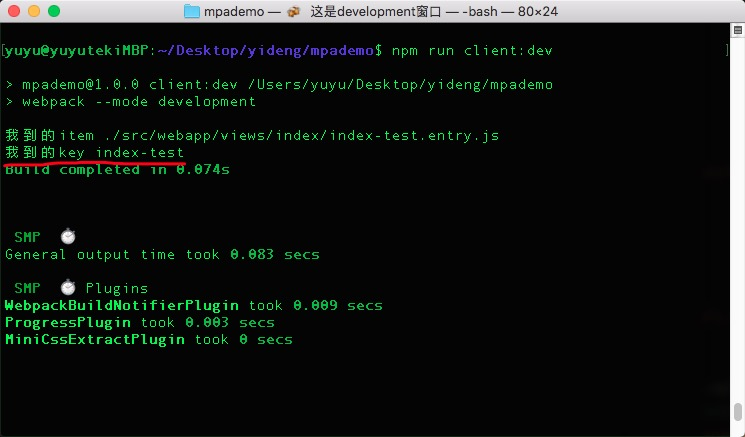
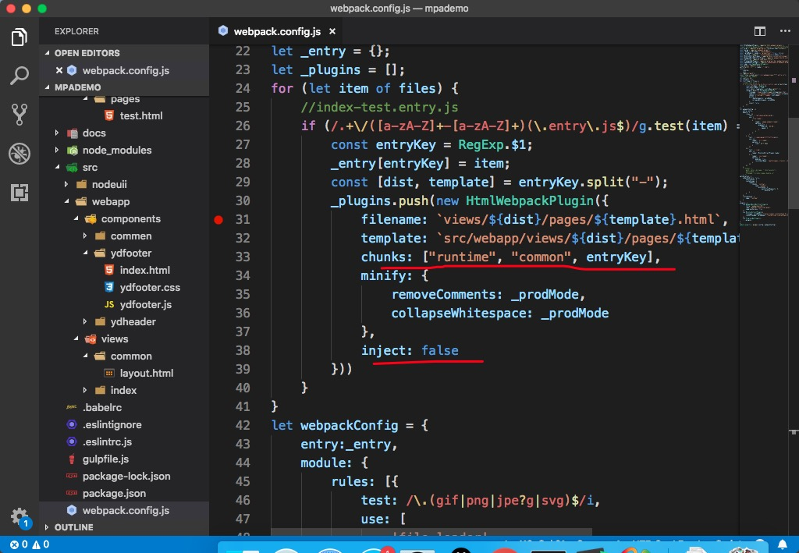

在nodeuii/routes/routesInit.js里面就可以写test.html的路由。
//routesInit.js
import indexController from "./indexController";
const routesInit = {
init(app,router){
app.use(router(_ => {
console.log("--------",indexController.indexAction());
_.get('/', indexController.indexAction());
_.get('/index.html', indexController.indexAction());
_.get('/test.html', indexController.testAction());
}));
}
}
export default routesInit;
//indexController.js
import IndexModels from "../models/indexModel";
const indexController = {
indexAction(){
return async(ctx,next)=>{
const indexmodel = new IndexModels();
const result = await indexmodel.getData();
ctx.body = await ctx.render("index",{data:result});
}
},
testAction(){
return async(ctx,next)=>{
const indexmodel = new IndexModels();
const result = await indexmodel.getData();
ctx.body = await ctx.render("index/test.html");
}
}
}
export default indexController;
借助webpack插件glob自动查找所有的entry。
npm install glob --save-dev
//webpack.config.js
const glob = require("glob");
const files = glob.sync("./src/webapp/**/*.entry.js");
console.log(files);
6. 配置package.json
"client:dev": "webpack --mode development",
"client:prod": "webpack --mode production",
7. 终端执行npm run client:dev就可以看到files已经打印出来。 8. 安装webpack的依赖包。
npm install webpack --save-dev
npm install webpack-cli --save-dev
npm install html-webpack-plugin --save-dev
npm install yargs-parser --save-dev
npm install webpack-merge --save-dev
npm install mini-css-extract-plugin --save-dev
npm install webpack-build-notifier --save-dev
npm install node-bash-title --save-dev
npm install progress-bar-webpack-plugin --save-dev
npm install speed-measure-webpack-plugin --save-dev
在webpack.config.js文件里面编写正则用来匹配entry.js
const files = glob.sync("./src/webapp/views/**/*.entry.js");
//需要去处理的入口文件
let _entry = {};
let _plugins = [];
for (let item of files) {
//index-test.entry.js
if (/.+\/([a-zA-Z]+-[a-zA-Z]+)(\.entry\.js$)/g.test(item) == true) {
const entryKey = RegExp.$1;
console.log("我得到的key",entryKey);
_entry[entryKey] = item;
}
}
 12. 自动生成views目录，并把html放进去，把对应的js加载进页面中。
//webpack.config.js
const HtmlWebpackPlugin = require('html-webpack-plugin');
const argv = require('yargs-parser')(process.argv.slice(2));
const merge = require("webpack-merge");
const _mode = argv.mode || "development";
const _prodMode = (_mode == "production" ? true : false);
const _config = require(`./config/webpack.${_mode}.js`);
const MiniCssExtractPlugin = require("mini-css-extract-plugin");
const WebpackBuildNotifierPlugin = require('webpack-build-notifier');
const setTitle = require('node-bash-title');
const ProgressBarPlugin = require('progress-bar-webpack-plugin');
const SpeedMeasurePlugin = require("speed-measure-webpack-plugin");
const smp = new SpeedMeasurePlugin();
const glob = require("glob");
setTitle(' 这是' + _mode + "窗口");
const {
resolve
} = require("path");
const files = glob.sync("./src/webapp/views/**/*.entry.js");
//需要去处理的入口文件
let _entry = {};
let _plugins = [];
for (let item of files) {
//index-test.entry.js
if (/.+\/([a-zA-Z]+-[a-zA-Z]+)(\.entry\.js$)/g.test(item) == true) {
const entryKey = RegExp.$1;
_entry[entryKey] = item;
const [dist, template] = entryKey.split("-");
_plugins.push(new HtmlWebpackPlugin({
filename: `views/${dist}/pages/${template}.html`,
template: `src/webapp/views/${dist}/pages/${template}.html`,
minify: {
removeComments: _prodMode,
collapseWhitespace: _prodMode
},
}))
}
}
let webpackConfig = {
entry:_entry,
module: {
rules: [{
test: /\.(gif|png|jpe?g|svg)$/i,
use: [
'file-loader',
{
loader: 'image-webpack-loader',
options: {
pngquant: {
quality: '65-90',
speed: 4
}
}
},
],
}, {
test: /\.(png|jpg|gif|ttf|otf|svg)$/i,
use: [{
loader: 'url-loader',
options: {
limit: 10 * 1024
}
}]
},{
test: /\.css$/,
use: [{
loader: MiniCssExtractPlugin.loader
}, {
loader: 'css-loader',
options: {
modules: true,
localIdentName: '[path][name]__[local]--[hash:base64:5]'
}
}]
}]
},
optimization: {
noEmitOnErrors: false,
splitChunks: {
cacheGroups: {
commons: {
chunks: 'initial',
name: "common",
minChunks: 2,
maxInitialRequests: 5,
minSize: 0
}
}
},
runtimeChunk: {
name: "runtime"
}
},
plugins: [
new WebpackBuildNotifierPlugin({
title: "webpack执行结果",
logo: resolve("/yuyu_xiao.png"),
suppressSuccess: true
}),
new MiniCssExtractPlugin({
filename: _prodMode ? "styles/[name].[contenthash:5].css" : "styles/[name].css",
chunkFilename: _prodMode ? "styles/[id].[contenthash:5].css" : "styles/[id].css"
}),
new ProgressBarPlugin(),
..._plugins
]
}
module.exports = merge(_config, webpackConfig);
但是我们发现js插入的位置不是很对，不是我们想要的结果，而且，scripts和styles目录都生成在了dist目录的根目录下，这不是很好的结果，我们需要继续优化。首先配置output，管理生成的目录。
const {
join,
resolve
} = require("path");
......
for (let item of files) {
//index-test.entry.js
if (/.+\/([a-zA-Z]+-[a-zA-Z]+)(\.entry\.js$)/g.test(item) == true) {
const entryKey = RegExp.$1;
_entry[entryKey] = item;
const [dist, template] = entryKey.split("-");
_plugins.push(new HtmlWebpackPlugin({
filename: `views/${dist}/pages/${template}.html`,
template: `src/webapp/views/${dist}/pages/${template}.html`,
chunks: ["runtime", "common", entryKey],
minify: {
removeComments: _prodMode,
collapseWhitespace: _prodMode
},
inject: false
}))
}
}
......
output: {
path: join(__dirname, "./dist/assets"),
publicPath: "/",
filename: "scripts/[name].bundle.js"
},

将js插入到html中，需要为webpack写插件,在config目录下创建htmlAfterWebpackPlugin.js文件，并在webpack.config.js中引用。
//htmlAfterWebpackPlugin.js
const pluginName = 'htmlAfterWebpackPlugin';
class htmlAfterWebpackPlugin {
apply(compiler) {
compiler.hooks.compilation.tap(pluginName, compilation => {
compilation.hooks.htmlWebpackPluginAfterHtmlProcessing.tap(pluginName, htmlPluginData => {
let _html = htmlPluginData.html;
_html = _html.replace("<!--injectjs-->", "<script></script>");
htmlPluginData.html = _html;
});
});
}
}
module.exports = htmlAfterWebpackPlugin;
//webpack.config.js
const htmlAfterWebpackPlugin = require("./config/htmlAfterWebpackPlugin.js");
......
plugins: [
new WebpackBuildNotifierPlugin({
title: "webpack执行结果",
logo: resolve("/yuyu_xiao.png"),
suppressSuccess: true
}),
new MiniCssExtractPlugin({
filename: _prodMode ? "styles/[name].[contenthash:5].css" : "styles/[name].css",
chunkFilename: _prodMode ? "styles/[id].[contenthash:5].css" : "styles/[id].css"
}),
new ProgressBarPlugin(),
..._plugins,
new htmlAfterWebpackPlugin()//一定要写在后面，要不然会勾不到东西
]
正式的将js、html、css引入到页面中。在htmlAfterWebpackPlugin.js中编写替换字符串的代码。执行npm run client:dev
//htmlAfterWebpackPlugin.js
const pluginName = 'htmlAfterWebpackPlugin';
const assetsHelp = (data) => {
let css = [],
js = [];
const dir = {
js: item => `<script src="${item}"></script>`,
css: item => `<link rel="stylesheet" href=${item}>`
}
for (let jsitem of data.js) {
js.push(dir.js(jsitem));
}
for (let cssitem of data.css) {
css.push(dir.css(cssitem));
}
return {
css,
js
}
}
class htmlAfterWebpackPlugin {
apply(compiler) {
compiler.hooks.compilation.tap(pluginName, compilation => {
compilation.hooks.htmlWebpackPluginAfterHtmlProcessing.tap(pluginName, htmlPluginData => {
let _html = htmlPluginData.html;
_html = _html.replace(/widgets:/g, "../../../");
_html = _html.replace(/common:/g, "../../common/");
const result = assetsHelp(htmlPluginData.assets);
_html = _html.replace("<!--injectcss-->", result.css.join(""));
_html = _html.replace("<!--injectjs-->", result.js.join(""));
htmlPluginData.html = _html;
});
});
}
}
module.exports = htmlAfterWebpackPlugin;
18. 修改nodeuii/routes/indexController.js里面显示到页面的配置。
//indexController.js
import IndexModel from "../models/IndexModel.js";
const indexController = {
indexAction() {
return async (ctx, next) => {
const indexmodel = new IndexModel();
const result = await indexmodel.getData();
// const result2 = result + data;
//主要修改这一句,简单的显示到页面一些数据.
ctx.body = "HA HA HA HA";
}
},
testAction() {
return async (ctx, next) => {
//这里的路径
ctx.body = await ctx.render("index/pages/test.html");
}
}
}
export default indexController;
安装copy-webpack-plugin
npm install copy-webpack-plugin --save-dev
在/config/webpack.development.js中使用copy-webpack-plugin
const CopyWebpackPlugin = require('copy-webpack-plugin');
const {
join
} = require("path");
module.exports = {
output: {
filename: "scripts/[name].bundles.js"
},
plugins: [
new CopyWebpackPlugin([{
from: join(__dirname, "../" + "/src/webapp/views/common/layout.html"),
to: '../views/common/layout.html'
}]),
new CopyWebpackPlugin([{
from: join(__dirname, "../" + "/src/webapp/components"),
to: '../components'
}],{
copyUnmodified:true, //只打包copy内容
ignore:["*.js","*.css",".DS_Store"]
})
]
};
终端依次执行：
npm run server:dev
npm run client:dev
npm run server:start
然后打开浏览器，访问localhost:8081,就能看见index.html主页面 访问：localhost:8081/test.html，就能看见我们写好的test.html